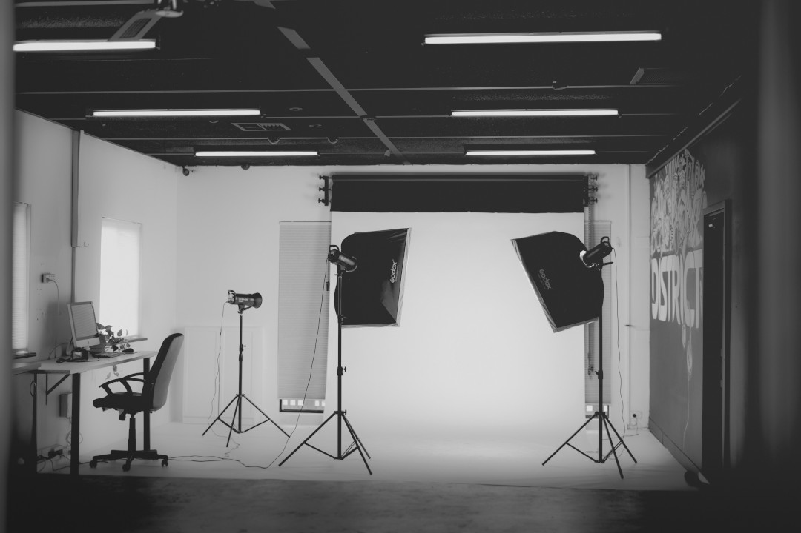
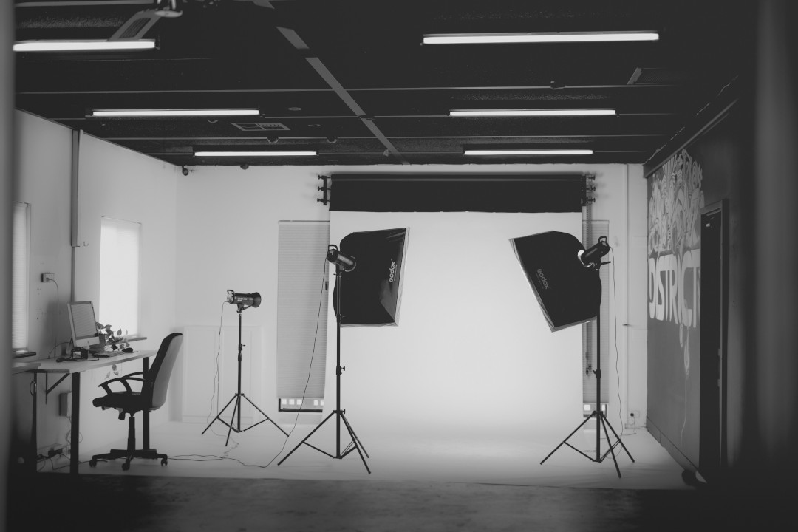

Rólam
Helló! A nevem Varga Félix, portréfotózással, eseményfotózás és reklámfotózással kezdtem foglalkozni, valamikor a 2000-es évek elején. Az utóbbi 11 évben bővítettem a portfóliómat, vállalok esküvői fotózást, gyermek/újszülött fotózást, családfotózást, továbbá egyedi kéréseket is teljesítek.
Ahol dolgozom
Pár kép erejéig láthatod, hol dolgozom:

 

Stúdiómban elérhetsz az alábbi időpontokban:
| Nyitvatartás | |||
|---|---|---|---|
| Hétfő | Kedd | Szerda | Csütörtök |
| 14-18h | 10-14h | 16-18h | 14-17h |